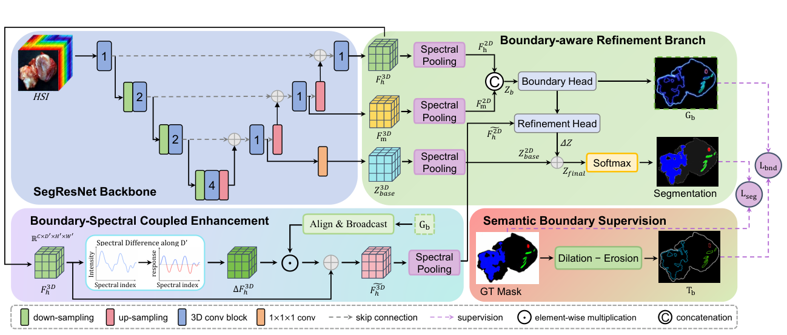
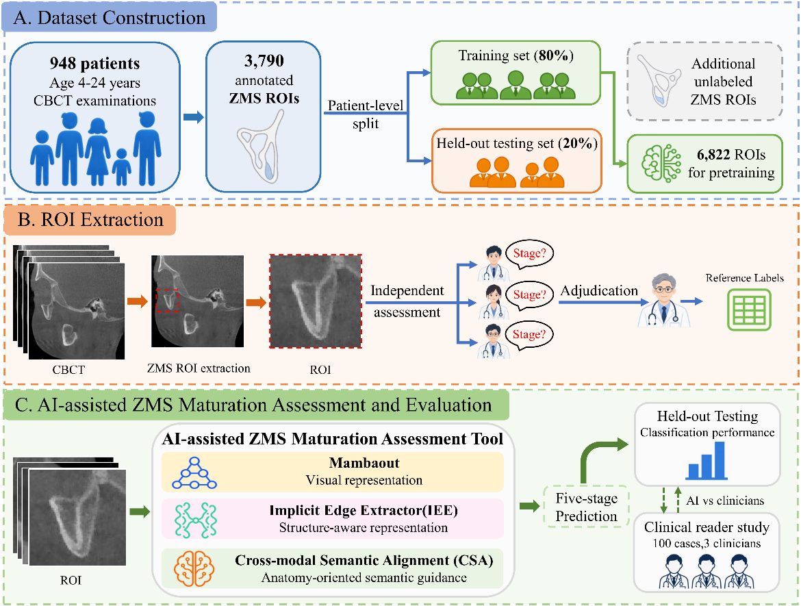

Research
SalivaryHSI-Seg
Submitted to TMI


A pixel-level benchmark for ex vivo salivary gland hyperspectral tissue segmentation, with HyBSD for boundary-aware spatial–spectral learning.
Paper details
SalivaryHSI-Seg: A New Challenging Benchmark for Ex Vivo Salivary Gland Hyperspectral Tissue Segmentation
The benchmark comprises 119 hyperspectral samples from 31 patients. HyBSD combines semantic boundary supervision, boundary–spectral coupled enhancement and boundary-aware refinement.
Evaluation. Patient-level five-fold cross-validation with full-HSI input: 74.97% mDice and 87.76% Tumor Dice (fold means).
ZMS Maturation Assessment
Submitted to JDR


Five-stage zygomaticomaxillary suture maturation assessment from CBCT, combining structure-aware features with anatomy-oriented semantic guidance.
Paper details
Intelligent Zygomaticomaxillary Suture Maturation Assessment
The dataset includes 3,790 annotated ROIs from 948 patients. An Implicit Edge Extractor (IEE) captures structural features, while Cross-Modal Semantic Alignment (CSA) provides anatomy-oriented guidance.
Evaluation. Patient-level 80:20 training–test split: 93.41% accuracy on the internal held-out test set.